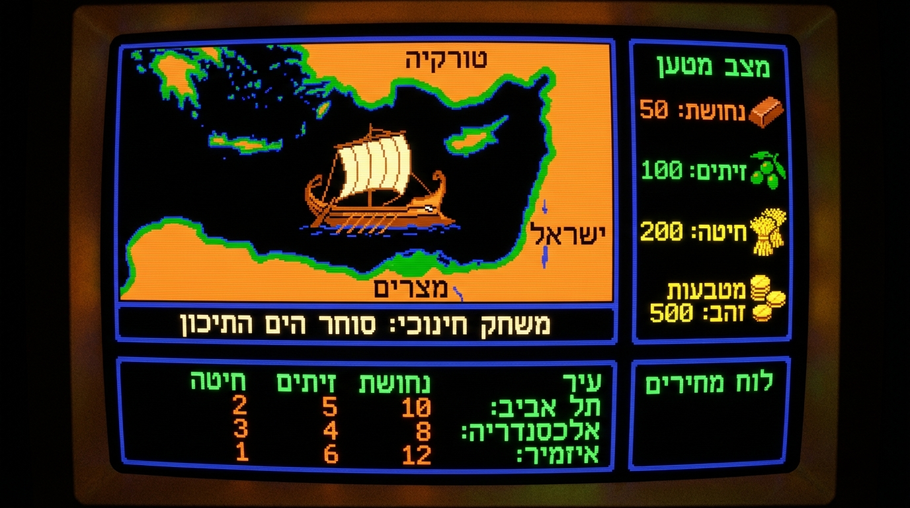
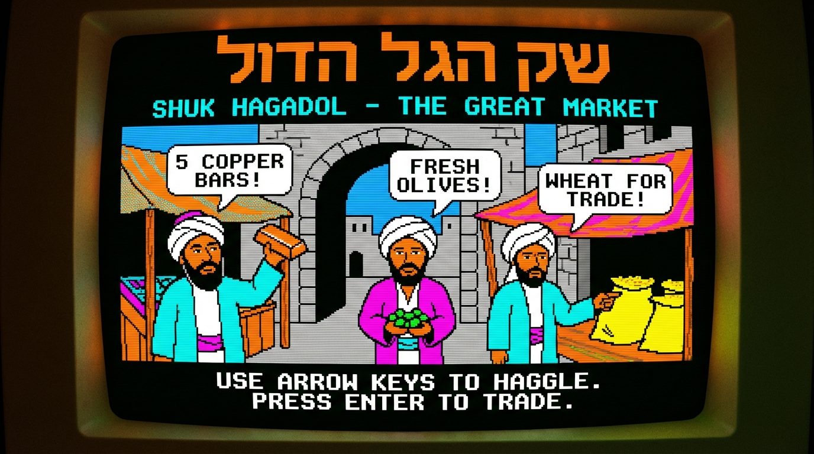
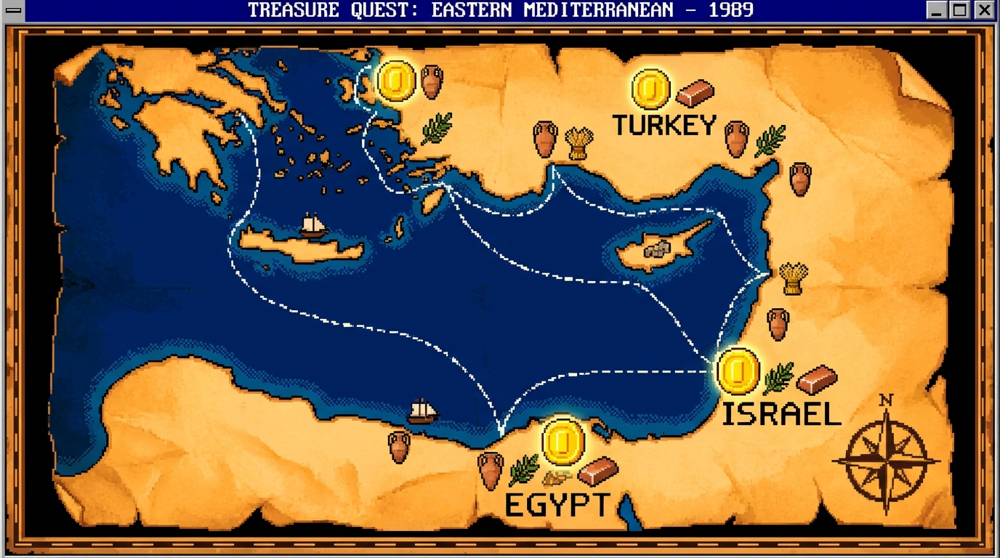

סוחר הים
סקיל לקלוד קוד שמשחק משחק DOS עברי מ-1989
קלוד פותח דפדפן, טוען DOSBox, ומשחק — אוטומטית
CLAUDE CODE SKILL v1.0
[01]
מה זה?
סוחר הים הוא משחק DOS עברי קלאסי משנת 1989 — אסטרטגיית מסחר ימי בין ישראל, תורכיה ומצרים. קונים סחורות בנמל אחד, מוכרים ברווח בנמל אחר, ומנסים להגיע לסוף 7 הימים עם כמה שיותר כסף.
הסקיל הזה מאפשר לקלוד קוד לשחק את המשחק אוטומטית לגמרי — פותח דפדפן, מכניס קלטים, מנווט בתפריטים, וצולם GIF של כל הסשן. הכל קורה בלי שתגע במקלדת.
[02]
צילומי מסך
SOCHER.EXE
-
□
×

האנייה בים — מסחר בין נמלים
MARKET.SYS
-
□
×

שוק הים התיכון — נחושת, זיתים, חיטה
TRADE.MAP
-
□
×

מפת המסחר — ישראל ↔ תורכיה ↔ מצרים
[03]
דרישה: תוסף Claude in Chrome
הסקיל שולט בדפדפן ישירות מהטרמינל. בשביל זה צריך את תוסף Chrome הרשמי של Claude — ללא התוסף קלוד לא יכול לפתוח דפדפן ולשחק.
-
01התקינו את התוסף מה-Chrome Web Store:
chromewebstore.google.com ← "Claude in Chrome" -
02היכנסו ל-claude.ai בכרום — התוסף מתחבר אוטומטית לחשבון הקיים.
-
03וודאו שאייקון התוסף בסרגל הכלים פעיל (לא אפור). אם הוא אפור — נסו להיכנס שוב ל-claude.ai.
-
04הפעילו Claude Code עם הדגל --chrome כדי לאפשר שליטה בדפדפן:$ claude --chrome
[04]
התקנת הסקיל
לאחר שהתוסף מותקן ו-Claude Code פועל עם --chrome, הדביקו את הפרומפט הבא בתוך קלוד — והוא יתקין את הסקיל לבד:
I found a Claude Code skill I'd like to install: https://github.com/aviz85/socher-hayam-skill
Please consult the claude-code-guide agent to learn how skills work and how to install them, then install this skill for me. The skill file is located at skill/SKILL.md in the repository above. Create the folder ~/.claude/skills/socher-hayam/ if it doesn't exist, and place the SKILL.md file there.
✓ הועתק — הדביקו בתוך Claude Code
[!] לאחר ההתקנה — סגרו והפעילו מחדש את Claude Code.
סקילים נטענים רק בהפעלה.
[!] הפעילו מחדש עם claude --chrome כדי שכלי הדפדפן יהיו זמינים.
[!] הפעילו מחדש עם claude --chrome כדי שכלי הדפדפן יהיו זמינים.
[05]
שימוש
user@claude-code:~$
/socher-hayam
[טוען סקיל...]
[OK] אוטומציית דפדפן אותחלה
[OK] DOSBox נטען בדפדפן
[OK] המשחק פועל
[OK] הקלטת GIF התחילה
קלוד משחק סוחר הים 1989
לפני שמריצים — ודאו:
- [✓] תוסף Claude in Chrome מותקן
- [✓] מחוברים ל-claude.ai בכרום
- [✓] אייקון התוסף פעיל בסרגל הכלים
- [✓] הסקיל מותקן ב-~/.claude/skills/socher-hayam/
- [✓] Claude Code הופעל עם claude --chrome
- [→] הקלידו /socher-hayam ותהנו